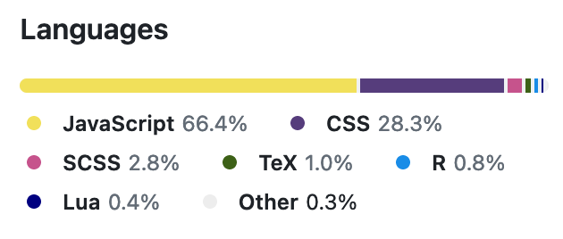

print("Hello, world")[1] "Hello, world"Patrick Cherry
December 29, 2023
I started a blog! Isn’t that grand!?
I’ve always had a lot of thoughts and opinions on many topics. And when I have a thought, idea, or opinion I really want to develop, I often use writing (privately, for myself) as an exercise for exploring, evaluating, and making more rigorous the thought.
When I sit down to write a book, I do not say to myself, ‘I am going to produce a work of art.’ I write it because there is some lie that I want to expose, some fact to which I want to draw attention, and my initial concern is to get a hearing.
-George Orwell, “Why I Write”
I suppose I’m passionate about some topics, some of which are clearly in my lane (e.g. Molecular Biology, Photography), and some of which are veering for me (e.g. Economics, Finance, Business Trends). That being said, I feel a duty as a scientist to explore these ideas honestly and with every intent of uncovering truth—especially to a standard that would meet those of the scientific community or journalism community.
And most practically, I sometimes need more space to discuss an idea than is allowed in a tweet or mastodon post. (And those threads never seem to fully connect, anyway.)
I have chosen to set up a self-hosted blog for many reasons. Self hosting has always seemed like the platonic ideal of a technically capable individual, and so I have set out to manifest this idea as a weekend project. As I will describe below, the default state of this is not ideal, and I’ve learned a lot about git, Github, Github Actions, Rmarkdown, Quarto, YAML, and TOML along the way.
Self hosting doesn’t literally mean I have set up a server in my office nook or anything so physically present. Self hosting just means I’m using my own html to render the content you see on the webpage before you. But why might that be worth it?
The state of online publishing today is a morass, to say the least. Some problems are quotidian, such as not being able to view a blog page without being bombarded with obnoxious popovers asking to log in, subscribe on the platform, or subscribe to the newsletter by email. Worse, the economics of certain high-profile blogging platforms recruiting writers to post their content there for a six-figure salary requires such platforms, in turn, to either monetize charge other, ‘lesser’ subscribers or readers. With leadership that doesn’t recognize how the mass-dissemination of hate speech can be a threat to democracy, platforms can accrue a hate speech problem, and be financially motivated to keep it.
Self-hosted blogging side-steps a lot of these problems. By self-hosting, I can craft a good web experience for the reader: no ads and no obnoxious popovers. I can post content without supporting these ethically dubious platforms with more content and more users (which would then be subjected to their recommendation algorithm). Should I devote the time, I could add an RSS feed, which is reminiscent of the time when all publications (aka blogs) were easily available and sync-able and readable as you wish: kind of like how podcasts still are today. (Can we make NetNewsWire relevant again?)
Plus, Quarto and Hugo makes for a blazing fast-loading website. How cyber-punk is that?!
Why would I choose Quarto as the mechanism of munging my writing and coding into a website? Well, the question partly answers itself.
I write tons of R markdown scripts already. R Markdown is a display wrapper language that allows for the execution of code in “chunks”. It makes for beautiful documents and reports where the code, figures/tables, and descriptions are fully self-contained for reproducible data analysis. The outputs can be useful and beautiful: as simple as a 1-page PDF, or as interactive as a Shiny web application.
I already have my data-driven resume in R Markdown. So I have some experience manipulating the rendering code to make documents pretty and multi-output compatible (e.g. PDF, Github Markdown, html). And, in theory, these documents should be easily compatible when translated into a website / blog.
I plan on posting lots of analysis and code, and the outputs. I have been, on occasion, posting these analyses to my github project repos, like for statistics, scRNA-seq, or bulk RNA-seq. Having a proper blog will be a great home to host all these posts together, and their future posts I can even tag them, so readers who are interested in one type can keep focused on posts of that topic.
Quarto is the next generation of scientific publishing systems, following-up where R Markdown left off. Quarto natively renders to HTML, PDF, MS Word, ePub (all by first passing through Pandoc, one of the most widely-supported markdown systems). And Quarto natively supports running Python, R, Julia, and Observable JS code, because yes, contrary to popular belief, I can code in Python. (Also, I may mess around with Observable JS in the future; it sounds nice for dashboards and interactive web data explorations.)
But, it turns out, Quarto’s own recommended implementation of a “Quarto Blog” involves some weird git and deploy mechanics. Quarto recommends either rendering the HTML locally and pushing it to git (using the quarto publish shell command), or setting up a GitHub action.
quarto publish shell command creates a new branch of the repo to contain the HTML pages (still checking HTML into git), but this branch is never supposed to be merged with the main/HEAD branch. (Furthermore, it cannot be merged, because it is not descended from the main branch, and contains no copies of files in it main branch.)reticulate to the docker image just so I could say print('Hello, world') using Python. Even more annoyingly, Rmarkdown was required to evaluate some code chunks. Both reticulate and Rmarkdown are notoriously difficult and long to install to a new environment.As of June 22, 2024, I realized that the specifics were different than I described in this section. The following section (Section 5) for details on the update.
Ian Taylor notes this in his blog post about GitHub actions. So, similarly to Ian, I added execute: freeze: auto lines to this blogs _quarto.yml so that 100% of Quarto would be pre-executed locally on my machine, and only if it changed. And those pre-rendered results are committed to git. Thus, this allows for the Github Action to be very sparse, only requiring an installation of Quarto on the shell PATH. From there, Quarto renders the HTML from the frozen quarto documents, and deploys it to Github Pages with an artifact transfer. The GitHub action takes ~ 45 seconds to deploy the site, and my locally run render takes less than 10 seconds. Nice!
I learned a lot from this adventure. From troubleshooting those malfunctioning Github Action deploys for so long, it really struck me that for this blog, as is so often the case in life, in the outdoors, and in data science, the road less traveled is sometimes a road more suitable. And with good documentation, it’s not too bad to implement.
In June of 2024, I was reviewing the .github/workflows files and the logs of the GitHub actions, and realized that I was doing none of the publish and deploy paths I had described above (Section 4).
quarto render command, which outputs the HTML site artifact to the /docs directory). Then, this version of the repository gets committed to git, and ultimately pushed to GitHub. Thus, I am checking programmatically generated / rendered content into git, in contrast to my previous plan.

My GitHub publish.yml action workflow is very sparse due to entirely local execution and rendering, far more sparse than whatever Quarto has recommended. For example, the publish.yml of this blog doesn’t even install / activate quarto on the compute node, because no quarto rendering processes are needed.
While it is inelegant (and against best practice of avoiding committing programmatically-generated code), I find committing the HTML very simple, and so I go with this. (This decision may not be best for everyone else.) I don’t use the quarto publish command or a different branch for the HTML.
main branch: each push represents a publication event.render: - "!*xxxx_xx_xx*" in the _quarto.yml file.
So it works! This process get the job done on a good enough basis for me, and has stood up to numerous updates to the blog, including new analysis posts with packages that were novel to me at the time. What a nice win for streamlined science communication.
I encountered the error “fatal: the remote end hung up unexpectedly” while trying to execute git push. This occurred both in the terminal and in R Studio’s nice git GUI. After searching up the error, I was able to fix it by running git config http.postBuffer 524288000 in my git-enabled project directory. All subsequent git pushes have worked.
So it would appear one downside of checking into git the entire website artifact is that the size of the git delta can overwhelm the git http transfer (when not configured specially). Word to the wise.